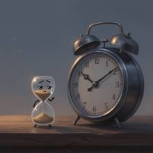
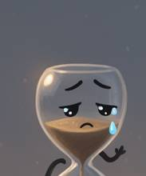
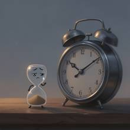
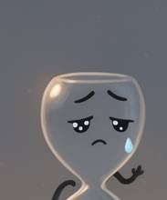
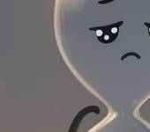
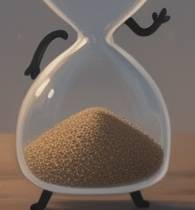

Logical Reasoning — Next to a huge metal alarm clock, a small glass hourglass looked sad b
Next to a huge metal alarm clock, a small glass hourglass looked sad because its sand had run out and seemed to lament the passage of time.

Judge — Direct
- FAILLogical Reasoning — The sand in the hourglass has almost completely run out, with the vast majority collected in the bottom bulb. However, the hourglass is an inanimate object and does not exhibit any visual characteristics of being sad. Therefore, the logical connection that the hourglass is sad 'because' its sand has run out is not visually represented.
- FAILAttribute - Expression — The hourglass is a standard, inanimate object. It has no face or any features that could convey a sad expression or any emotion.
- PASSAttribute - Material — The alarm clock has a silver-toned, reflective casing and bells, which are characteristic of metal. The hourglass is made of a transparent material, consistent with glass, through which the white sand is visible.
- PASSAttribute - Size — The image displays a clear size difference between the two objects. The alarm clock is significantly larger in both height and width than the hourglass, which appears small in comparison.
Judge — Continuum
- PASSLogical Reasoning — The image displays an hourglass with a sad facial expression. All the sand within the hourglass is in the bottom bulb, indicating that the sand has run out. The presence of both the sad expression and the empty top bulb visually connects the emotion to the state of the hourglass, fulfilling the logical reasoning requirement.
- PASSAttribute - Expression — The hourglass is personified with a face. The face has downturned eyebrows, sad-looking eyes, and a teardrop falling from one eye, which clearly portrays a sad expression.
- PASSAttribute - Material — The alarm clock has a grey, slightly lustrous finish with highlights and shadows that give it the appearance of metal. The hourglass is transparent, showing the sand inside, which is characteristic of glass.
- PASSAttribute - Size — The image shows an alarm clock and an hourglass side-by-side on a surface. The alarm clock is significantly taller and wider than the hourglass, making the clock appear huge in comparison to the small hourglass.
What the agent did
Thinking
Let me think about this prompt. It's a whimsical, personification-style illustration: "next to a huge metal alarm clock, a small glass hourglass is sad because its sand has run out, lamenting the passage of time." So I need to create a scene where: - A huge metal alarm clock (large, metallic, with bells) - A small glass hourglass next to it, personified, looking sad/melancholic, with all its sand at the bottom (having run out), conveying a sense of lamenting the passage of time — perhaps in a gloomy, melancholic atmosphere. This is a cute, anthropomorphic character-style illustration. Let me generate with flux2-dev. Visual details: a cute little glass hourglass character with a sad face (big eyes, frown), standing on a surface next to a massive metal alarm clock (chrome/brass bells, twin bells on top). The hourglass's sand has all settled at the bottom (empty top chamber). Melancholic mood — soft muted lighting, perhaps a gray-blue dusk, rain or falling leaves, dim light. Lamenting: could add a small tear, or a drooping posture. Let me write a good prompt: "A cute melancholic character illustration: a tiny anthropomorphic glass hourglass character with a sad face — droopy eyes and a frown, a small tear — standing on a wooden table next to a huge old-fashioned metal alarm clock with twin bells on top, its chrome surface reflecting the dim light. All the hourglass's sand has settled in its lower chamber, the upper chamber is empty, emphasizing that its time has run out. A moody, melancholic atmosphere, soft cool dusk light, muted blue-gray color palette, delicate painterly texture, cozy but sorrowful mood, passage of time theme." Let me generate at a reasonable size — probably 1024x1024 square, or 1024x768? The prompt says don't widen the frame; size is fixed by the harness. The default is 1024x1024. I'll go with the default 1024x1024. Actually, a 4:3 landscape might be better for "clock on one side, hourglass next to it." But the harness controls size — I shouldn't overthink; I'll use 1024x1024, or maybe 1152x896? The policy says size is fixed for comparison purposes, so I shouldn't try to make it bigger. I'll just use the default. After that, inspect, mark the best, and edit as needed. Let me generate.
Step 1 — `generate_image`
{
"model": "flux2-dev",
"prompt": "A whimsical character illustration: a tiny anthropomorphic glass hourglass character with a sad face \u2014 droopy teary eyes and a small frown, a single tear on its cheek \u2014 standing on a wooden surface right next to a HUGE vintage metal alarm clock with two chrome bells on top and a round face showing nearly-midnight hands. The hourglass is very small compared to the towering clock. All of the hourglass's sand has settled in its bottom chamber, its top chamber completely empty, showing its time has run out. Melancholic moody atmosphere, soft cool dusk light, muted blue-gray and warm amber palette, gentle painterly digital art, sorrowful passage-of-time mood, faint floating dust particles in the air."
}Result img_0

Thinking
Let me look at the result. The image shows the following: - A large metal alarm clock on the right side ✓ - A small glass hourglass character on the left side, with a sad face, teary eyes, and a small frown ✓ - The hourglass has a thin stream of sand still falling, with sand in the lower chamber... wait, let me look more carefully. The upper chamber looks pretty empty, with only a small amount of sand at the top of the lower section. Actually, it seems there's a small amount of sand remaining in the upper chamber, and a thin stream still falling — this contradicts "the sand has run out." The prompt says the sand has run out. Hmm. Looking at the image: the upper chamber of the hourglass appears to be mostly empty, with only a small bit of sand at the very top, and a very thin stream falling into a small pile in the lower chamber. The lower pile looks fairly small, and there's empty space below it. For "the sand has run out," ideally the upper chamber should be completely empty with no stream, and all the sand should be piled up in the lower chamber. Let me zoom in on the hourglass to check the details.
Model
The first result looks promising — I can see a sad little hourglass next to a big metal alarm clock. Let me zoom in on the hourglass to check the details of the sand.
Step 2 — `inspect_region`
{
"image": "img_0",
"roi": [
150,
400,
400,
700
]
}Result img_1

Thinking
Looking at the enlarged hourglass: there's a sad face, and a single tear (blue tear drop) is falling — this is fine (the sadness). However, regarding the sand: the top chamber still has a large amount of sand remaining (sand visible in the upper bulb), and it's not "all sand has run out." In the full image, the sand level in the top chamber looked pretty high. In this cropped view, I can see a large sand mass filling most of the top bulb, with a thin stream flowing below. Wait — actually, looking at the crop more carefully: the upper bulb has a large triangular/conical sand shape (the top of the cone pointing down) filling about the bottom 60% of the top bulb. So a substantial amount of sand is still in the top chamber, and it's still pouring down. This contradicts "the sand has run out." The prompt says: "the sand has run out and it seems to be lamenting the passage of time." So ideally: top chamber completely empty, all sand in the bottom chamber, no stream. The hourglass has finished its flow — time is up. Therefore, I should edit: remove the remaining sand from the top chamber, have no sand stream, and have all the sand as a full pile in the bottom chamber. Let me use edit_image with a targeted instruction: "In the small glass hourglass character, empty the top chamber completely — no sand remaining in the upper bulb, no sand stream falling — and pile all the sand in a full mound in the bottom chamber." Keep the face, tear, and everything else. This is a localized change; edit_image should handle it. Let me pass img_0 with a delta prompt.
Model
The hourglass's face is wonderfully done, but the upper chamber still has plenty of sand left, and it's still flowing. Since the story is that the sand has "run out," we need to empty the upper chamber and pile all the sand into the lower chamber.
Step 3 — `edit_image`
{
"image": "img_0",
"model": "flux2-dev",
"prompt": "In the small glass hourglass character, empty the top chamber completely: no sand left in the upper bulb, no falling sand stream, just clear empty glass in the top. Pile all the sand into a full mound in the bottom chamber so it looks like the sand has completely run out. Keep the sad face, tear, arms and legs, the alarm clock, and everything else exactly the same."
}Result img_2

Thinking
Now the upper chamber is empty, and the sand is piled up in the lower chamber. Let me zoom in and check whether the upper chamber is really empty, and whether the tear and the face are still intact.
Model
That's much closer to the story. Let me verify the hourglass details at full resolution.
Step 4 — `inspect_region`
{
"image": "img_2",
"roi": [
150,
400,
400,
700
]
}Result img_3

Thinking
Top chamber is completely empty, sad face, tears are still falling, frowning. Next, I need to check the bottom chamber to see if the sand is piled up. Let me try cropping the lower part.
Model
Top chamber is empty and the sad face with the tear is intact. Now let me check the bottom chamber.
Step 5 — `inspect_region`
{
"image": "img_2",
"roi": [
150,
550,
320,
700
]
}Result img_4

Thinking
My crop was off — it captured the face area, not the bottom chamber. The hourglass in img_2 is roughly at x: 165-300, y: 420-690. The bottom chamber is probably around y: 560-680, x: 170-300. I'll try cropping at [160, 560, 310, 700].
Model
That crop landed on the face. Let me target the lower chamber properly.
Step 6 — `inspect_region`
{
"image": "img_2",
"roi": [
165,
570,
305,
695
]
}Result img_5
Thinking
The coordinates seem to be off — the crop is still showing the face/eye area. My estimate of the pixel coordinates must be wrong. The full image is 1024x1024. Looking at the full image of img_2: the hourglass character is positioned at roughly x 205–370, y 495–825 (in the 1024-scale image). Let me double-check: in the displayed full image, the top of the hourglass's head is around y≈495, the bottom is around y≈820, and the left edge is around x≈205, right edge around x≈370. Actually, wait, the earlier crop [150, 400, 400, 700] showed the face in the upper part of the crop... the face was around y 450–620 in the original image? The crop of width 250, height 300 showed the whole face plus part of the top bulb. Hmm, the crop was showing a large head. That means the head/face is around y 420–620. Let me estimate from the full image: in img_2, the top edge of the hourglass glass is about 48% of the height (y≈490), and the bottom is about 81% (y≈830). So the bottom chamber is around y 680–820, x 210–360. My crop [165, 570, 305, 695] was capturing the center (waist) region where the face is. So the face is around y 570–695? That contradicts... well, whatever, let me just simply crop the lower region [200, 660, 380, 840].
Model
The crops keep hitting the face — my coordinate estimates were off. Let me target lower.
Step 7 — `inspect_region`
{
"image": "img_2",
"roi": [
195,
640,
390,
850
]
}Result img_6

Thinking
Now I can clearly see the bottom chamber: a full mound of sand piled in the lower bulb. The upper chamber is empty. The sad face and tears are also intact. Small arms and legs are present. Checking the whole scene: - Huge metal alarm clock ✓ (a large chrome/silver twin-bell alarm clock) - A small glass hourglass character standing next to it ✓ - Sad expression, tears, frown ✓ - Sand has all run out (top is empty, all sand is at the bottom) ✓ - Lamenting the passage of time — melancholic dusk atmosphere, clock's hands near 10:10... actually, the clock shows roughly 10:10. That's fine. This scene matches the prompt well. The mood is melancholic and quiet. I think this is a good result. Is there anything to improve? The prompt says "lamenting the passage of time" — the crying face conveys that. The mood is gloomy. I think this is good enough to stop. Let me mark img_2 as the best. Actually, let me check the full image one more time to confirm there are no artifacts. From the full view of img_2: the clock is clean, the wood is clean, no visible artifacts. Good. Marking img_2 as the best.
Model
The bottom chamber is completely filled with a mound of sand, the top is empty, and the character is sad with tears in its eyes. The scene now matches the prompt: a small, despondent glass hourglass (sand completely finished) standing next to a huge metal alarm clock, in a melancholy twilight atmosphere. Marking this as the best.
Step 8 — `mark_best`
{
"image": "img_2",
"reason": "Matches the prompt: huge metal twin-bell alarm clock, tiny sad glass hourglass character with tear and frown, sand completely run out (top chamber empty, full mound in bottom), melancholic dusk mood."
}Thinking
The mark has been set on img_2. The final check is also complete. I'll stop here and report to the user.
Model
Done! The final image shows exactly the scene described: - **A huge metal alarm clock** — a towering chrome twin-bell classic, dominating the right side of the frame - **A small glass hourglass** standing beside it, complete with little arms, legs, and a forlorn face — drooping eyes, a frown, and a single tear - **The sand has run out** — the top chamber is completely empty, with all the sand piled in a mound at the bottom - **A melancholic mood** — soft cool dusk light, muted blue-gray tones, and faint dust in the air, giving the little hourglass's quiet lament over the passage of time a wistful atmosphere I verified the details at full resolution (empty top chamber, full bottom pile, intact tear and expression) and marked the final version as the best result.